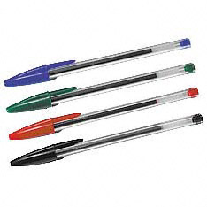

Objetos diabólicos
 De: La Frikipedia, la enciclopedia extremadamente seria.
De: La Frikipedia, la enciclopedia extremadamente seria.
Este tipo de objetos, creados por su malísima majestad, el gran Cthulhu, tienen el objetivo de hacer de nuestras vidas un infierno, para terminar con nuestra raza poco a poco y haciendonos sufrir.
Su Creación
Cuando Cthulhu creó estos objetos, lo hizo con la intención de eliminar a la raza humana, para poder tener más libertad a la hora de combatir contra Chuck Norris con quien mantiene una dura rivalidad (de momento gana el Cthulhu, 85.642 a 0). El caso es que se dió cuenta que dichos objetos provocaban la muerte de los humanos de forma muy lenta, pero como le dió palo eliminarlos de la faz de la tierra, los dejó y aún siguen destrozando la humanidad. Todos estos objetos están bajo una forma inocente, pero todos ellos son terriblemente mortales. Aquí veremos solo una muestra de ellos, tampoco es cuestión de ponerlos todos.
Los sobres

Dentro hay una increíble fuente de maldad y destrucción
Los sobres, esos objetos que aparentemente sirven para mandar mensajes, son nada más y nada menos que uno de los objetos diabólicos preferidos de Cthulhu. Al crearlos, los fabricó así para que su inocente tamaño nos hiciera confiarnos. Aquí hay una muestra de su poder:
- El sobre puede transportar todo tipo de mensajes, entre ellos amenazas de muerte, códigos que llevan a la perdición, facturas, etc. Todo esto conlleva a la locura o a la depresión, y termina con el suicidio del sujeto que ha recibido el mensaje.
- Está hecho de papel, eso significa peligro mortal. Te puedes cortar un dedo al tocarlo. Y de ese dedo saldrá una sangre que puede ser utilizada en contra tuya por ejemplo creando clones de tu persona para agrupar un enorme ejército que pueda dominar el mundo.
- Los sobres tienen unos parientes no muy lejanos inventados por los humanos a los que hemos llamado "paquetes". Los paquetes tienen más capacidad para llevar cosas más grandes como dinamita, bombas atómicas, horrendos floreros que terminan llevando a la muerte.
Los calcetines
Esta abominable obra de Cthulhu se utiliza comunmente para cubrirnos los pies del frío, pero... además de eso, es una más que increíble arma de destrucción. Cthulhu lo sabe, y se siente orgulloso de ello. Aquí vemos algunas utilidades:
- Al llevar puesto uno o dos calcetines, te olvidas de llevar zapatos, porque con este tipo de ropa no te ensucias los pies. Eso conlleva a un augmento de posibilidades de clavarte una chincheta o un cristal, incluso un supositorio, provocandote la locura instantanea. Después de pegar saltos por toda la habitación, teniendo la posibilidad de tropezar y comerte el canto de la mesa o caerte por la ventana, te dejarás caer en el sofá, sin saber que quizá debajo hay un montón de chinchetas o cristales, incluso supositorios, provocandote una locura aún peor que antes y posteriormente la muerte.
- Los calcetines están hechos con hilo, otra arma diabólica, ya que se puede utilizar para ahogar a la peña. Pero no es a eso a lo que me refería. Hay algo que produce más destrucción. Cuando un calcatín se te deshila un poco, te puedes tirar horas tratando de arrancar ese maldito hilo con los dientes, llegando a perder la paciencia e incluso la cordura, provocandote posibles embólias o cosas peores.
- Además de todas estas parrafadas, el calcetín usado apesta, y puede ser utilizado para ahogar sin piedad a tus enemigos. Y ya ni te cuento si le obligas a comerselo.
Los tapones (que nadie se ofenda)
Los tapones parecen poco ofensivos, pero eso es lo que quería Cthulhu al crearlos así que... NO OS FIÉIS!! En cualquier caso, este ser unido a la botella (o garrafa) produce estragos por donde va, y nadie le hecha la culpa. Mirad, mirad que perverso:
- Los tapones son seres diminutos y por tanto con fácil acceso a algunas partes más protegidas de nuestro cuerpo. Tu destapas una botella y dejas el tapón encima del sofá. Te bebes el contenido de la botella (ya hablaremos de eso en el siguiente punto) y te olvidas de que hay un tapón cerca de tu ano. Luego te paseas por la casa en calcatínes, te pinchas el pie y al sentarte al sofá... ya la hemos líado.
- A veces los tapones no son la parte importante del ataque, si no lo que hay debajo de ellos. Me refiero al contenido de la botella e incluso a la botella en si. Un tapón perverso (o sea, todos) puede abrirse en cualquier momento sin que te des cuenta, provocando que, al cojer la botella por el nombrado tapón, el recipiente caiga, probablemente en el pie, desparramandose todo el líquido (graciosos, abstenerse) por el piso. La cosa queda hecha un asco, y cuando vuelves de buscar la fregona, resbalas con el diabólico tapón para pegarte un morrazo que te deje KO. Si además caes cerca del líquido derramado, las probabilidades de morir ahogado son bastante altas.
- Igual que el calcetín, el tapón puede ser ingerido provocando la muerte por ahogamiento sin ninguna salida posible.
Los bolígrafos
 Dios Santo! Cuatro bolis! Estamos perdidos!
Estos seres alargados y con goteante punta (obviaremos la graciosa comparación) son terriblemente mortíferos, si se utilizan con malas intenciones. Veamos algunas de sus utilidades:
- Al utilizar un bolígrafo no nos damos cuenta de que en su interior corre una buena cantidad de tinta. Esto es algo de lo que no nos damos cuenta hasta que no es demasiado tarde. Me explicaré. Tu estás utilizando tu fiel boli pero te paras a meditar. ¿Que haces? Inconscientemente te lo llevas a la boca, dandole una brillante oportunidad para acceder con facilidad a tu vulnerable cuerpo. El boli se autodestruye, provocando la
eyaculación expulsión de toda la tinta en lo que vendría a ser... tu boca, provocando así un enorme nivel de asco y de humillación en caso de que te ocurra estando rodeado de gente.
- El bolígrafo puede ser utilizado facilmente como daga, ya que su punta afilada puede perforar (que guarro me está saliendo el artículo) un cuerpo humano sin dificultad.
- Lo peor del boli no es cuando vive, si no cuando muere. El caso es que muere cuando se le termina la tinta, y siempre escogen el peor momento para morir, creandonos un estrés adicional que puede terminar del todo con nuestra salud mental.
Las cucharas
Si el perro es el mejor amigo del hombre, está claro que las cucharas son su peor enemigo. Lo bueno de las cucharas es que no tienen ningún tipo de medida de seguridad, y eso les da mucho márgen de actuación. Aquí algunas de sus peores acciones:
- Las cucharas se utilizan para recoger comida e introducirla en la boca. Solo por eso ya deberían prohibirlas. Dentro de la boca tienen libertad absoluta para verte las cáries y saben perfectamente donde te duele para poder usarlo como punto débil.
- La gente vigila con los tenedore y los cuchillos por que se te pueden clavar pero... no habéis pensado que si se os clava una cuchara, os hará muchísimo más daño? Pensadlo bien...
- Supongo que os habréis fijado que las cucharas tienen forma redonda. Diréis, para coger mejor la comida. Nada más lejos de la relidad. Hay un órgano humano redondo (y no es un testículo) concretamente el glóbulo ocular. Os parecerá asqueroso, pero la cuchara es una perfecta herramienta para sacar un ojo. Se introduce y se baja, sistema palanca, y ¡POP! Fuera ojo. Está hecho a medida. Así lo hizo Cthulhu.
Otros objetos diabólicos que es necesario mencionar
- Los peines
- Los termómetros
- Los despertadores
- Las libretas con anillas
- Los albornozes sin capucha (poco comunes, pero igualmente temibles)
- La Xbox 360
- Los legos (su mas danina creasion)
Conclusión
Estos objetos diabólicos son solo una muestra de los peligros que hay por el mundo. Hay algunas cosas que podemos hacer para que estos objetos sean más benevolentes con nosotros. Por ejemplo, escribir su nombre en mayúscula. Eso les enorgullecería, y algunos incluso lo agradecerían. Y os preguntaréis ¿por que aquí no hay ningún nombre escrito en mayúsculas? Porque yo ya se distinguir entre los objetos buenos de los malos y os puedo asegurar de que no encontraréis una sola cuchara en mi casa. Ahora vosotros tenéis la información ¿Podréis sobrevivir con ella?
Autor(es):
- Roms
- Veni Vidi Vici
- Borinotman
- Dark temptation
- Pelubmu
- Roms.
- Genericool
- Monomadrid
- X900
Frikipedia 2005-2016, Licencia
GFDL 1.2 - Extraído por FrikiLeaks